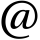
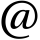

Researcher
My current projects include animation, deception, human-embodied agent interaction, and hidden patterns in communication. View a copy of my VitaFather
I am a huge fan of my family. I have two wonderful kids and a beautiful wife who are my motivation for everything I do.Geek
I consider myself a geek. I love to push myself to learn new things, often for no other reason than because I want to learn them. My most recent obsession has been the Ogre graphics rendering engine. I'm working on a few personal and work projects using that to aid my research. And because it's awesome.
You may be able to catch me social networking. I'm an infrequent tweeter and an even less frequent blogger.

